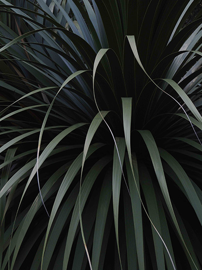
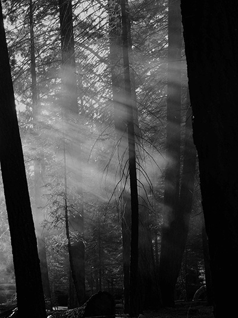
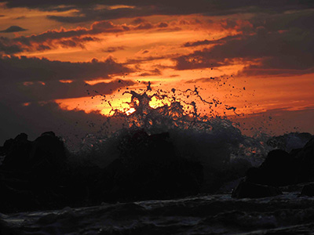
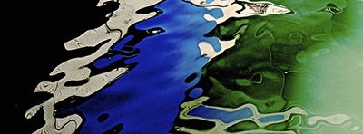
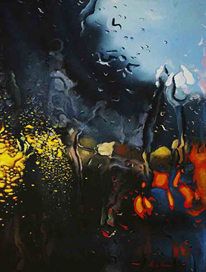
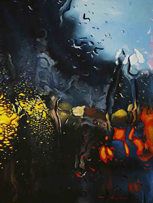

Fine Arts
I do artwork for a variety of reasons: to capture an observation, to communicate an idea, but most often because I just want to create something.
My favorite media include white charcoal, ball point pen, colored pencil, and oil paint. My artwork often focuses on surreal themes but is rendered in a realistic, detail-oriented style. I have always been interested in how light interacts with the world through shadows, reflections, and transparent materials, and the techniques artists use to replicate these observations on 2D media. My interest in biological illustration further enhanced my attention to detail and textures. Other favorite subjects include biblical imagery, rainy days, and cats.
Graphic Design and Publications
I find digital graphic design incredibly useful professionally but also a fun way to apply art to other subjects. I am particularly interested in the interplay between science and design, which I see as a two-way street. We can use scientific inspiration to inform design. What’s pretty in science? We can also use careful design to enhance scientific communication. How can we make a dry, complex concept visual, elegant, and engaging? Much of my work was produced during my time as a writer and Editor-in-Chief for the Berkeley Scientific Journal. I work in Adobe Photoshop, InDesign, and Illustrator.
Photography
I use photography both to take reference photos as well as an artistic end in itself. My photography focuses on two subjects. The first is nature and animals. Living in California has presented many opportunities to capture natural beauty from the coast to the Sierras and the deserts beyond. The second topic addresses many of the same themes as my painting and drawing: shadows, reflections, and textures. Some of my favorite subjects in this category are fires, bubbles, smoke, and waves.




 
